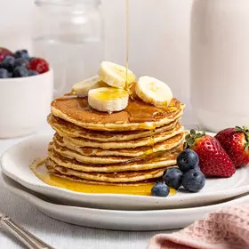

Pancakes

Description
Here's how to make pancakes. Chelsea's Sunday Pancake recipe is super easy
and quick. Enjoy with Chelsea Flavoured Syrup - Maple, Honey Maple, or NEW
Vanilla, Butterscotch or Caramel.
Ingredients:
- 1 cup Edmonds Self Raising Flour (150g)
- 2 Tbsp Chelsea White Sugar
- ½ tsp finely grated lemon zest (optional)
- 1 cup Meadow Fresh Milk (or Soy/Rice milk) (250ml)
- 1 egg, lightly beaten
- 30g Tararua Butter, melted (or margarine)
Steps:
-
Sift Self Raising Flour and Chelsea White Sugar into a medium-large
bowl. Make a well in the centre of the dry ingredients.
-
Add the lemon zest, Milk, egg and melted Tararua Butter/margarine and
whisk to combine.
-
Heat a large non stick frying pan over medium heat and grease lightly
with Tararua Butter or oil.
-
For each pancake, place 2 tablespoons of batter into the pan. Cook for 2
minutes or until bubbles form on the surface. Turn and cook for a
further 1 to 2 minutes, or until pancakes are cooked through.
To Serve:
- 2 bananas, sliced
- 1 punnet blueberries (or frozen berries, defrosted)
- Syrup - Butterscotch, Caramel, Vanilla, Maple or Honey Maple.